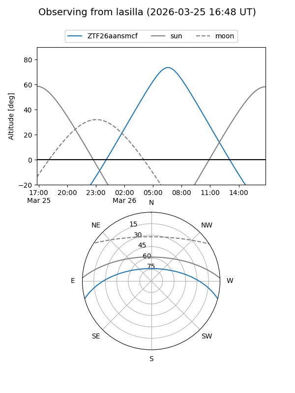
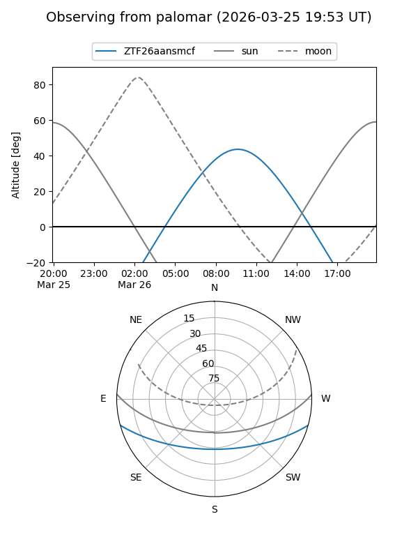

ZTF26aansmcf
Target ZTF26aansmcf at 2026-03-26 10:29
Aliases and brokers:
FINK: link
Lasair: link
ALeRCE: link
alt names
ZTF26aansmcf (ztf,fink_ztf)
Coordinates:
equatorial (ra, dec) = 211.1882,-12.88172
equatorial (HMS+DMS) = 14:04:45.16,-12:52:54.20
galactic (l, b) = (329.2280,+46.21307)
Flags:
Photometry:
last ztfg=20.08, ztfr=20.22
1 ztfg, 1 ztfr detections
Lightcurve
Visibility


Additional plots